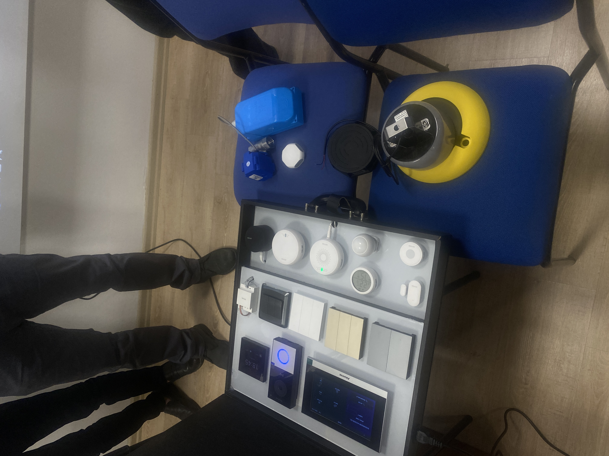

On the 5th of December 2023 we got an advance introduction of Internet of things most commonly known as IOT by a company called Smart rasa group which is the first IoT company in northern Cyprus.

What I learnt from this is seminar is that IOT is about responding and reaction. To go in-depth loT devices surpass the number of people globally According to Statista, there are approximately 15.14 billion connected IoT devices as of 2023 which is equivalent to just under twice the total number of people worldwide (eight billion).
Internet of Things ecosystem is made up of web-enabled smart devices that gather, transmit, and act upon data they obtain from their surroundings using embedded systems, which include CPUs, sensors, and communication hardware. By connecting to an IoT gateway, which serves as a central hub where IoT devices may transfer data, IoT devices can share the sensor data they gather.
IoT devices in smart homes are equipped with sensors and communication modules, allowing them to collect and exchange data to enhance their functionality. Automation of numerous processes, including security systems, heating and air conditioning and lighting, is made possible by IoT. Users can use their smartphones or voice-activated assistants to manage lighting settings, colors, and schedules with IoT-connected light switches and bulbs.
Home security is improved with Internet of Things gadgets like motion sensors, doorbell cameras, and smart cameras. Real-time home monitoring is available to users, who can also get notifications about questionable activity.
Voice-activated management over a variety of smart home equipment is made possible by IoT-enabled devices such as Google Home and Amazon Echo, which provide easy user interaction with their homes. IoT connects and automates many areas of daily life at home, improving convenience, energy efficiency, and security overall in smart homes.
Security Concerns: IoT devices' interconnectedness creates security threats, such as illegal access and data leaks. To solve these issues, it is essential to make sure that strong encryption, frequent software updates, and authentication procedures are in place.
Enhanced Security Measures: The dangers connected with IoT devices can be reduced by putting strong security standards in place, such as secure boot procedures, end-to-end encryption, and frequent security updates.
IOT is about responding and reaction .
I’m glad of the major opportunity I had in attending this seminar really learnt a lot and it was an eye opener to the way I see things now In the movement of technology. Really learnt how just one simple technological sensor can save a lot of costs in the nearest future to come . Based on the challenges of Iot the benefits of Iot Is way greater than the challenges faced or mentioned in the seminar.